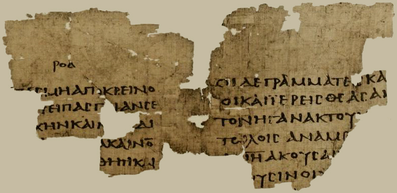

Oxyrhynchus Papyri

- Find Name
- Oxyrhynchus Papyri
- Historical Period
- Roman
- Artifact Date
- Ptolemaic–Byzantine periods (archive; 1st–6th centuries AD for the biblical papyri)
- Date Discovered
- 1896–1907 (excavations began); ongoing
- Discovery Location
- Oxyrhynchus (el-Bahnasa), Egypt
- Current Location
- Sackler Library, Oxford (papyri); various museums
- Timeline Era
- Early Church
- Description
- The vast papyrus archive recovered from the rubbish mounds of Oxyrhynchus by Bernard Grenfell and Arthur Hunt: hundreds of thousands of fragments covering tax receipts, private letters, and literature — including some of the earliest surviving New Testament papyri. This entry covers the archive itself; individual papyri already listed elsewhere are distinct entries and are not repeated here.
- Biblical Significance
- Oxyrhynchus is how we know ordinary Christians owned, copied, and carried the Scriptures within a generation or two of the apostles. A rubbish mound preserved what persecution and time could not erase: the everyday paperwork of a church that wrote its faith down.
- Evidence Class
- Contextual
- Interpretations
- Scholars agree the archive is the Oxyrhynchus rubbish-mound deposit; individual fragments are dated and identified case by case, and the archive as a whole illuminates early Christian book culture rather than any single passage.
Awaiting Review Not yet checked against scholarly sources. Treat its claims as provisional until this entry is reviewed. About verification
Last reviewed: not yet reviewed